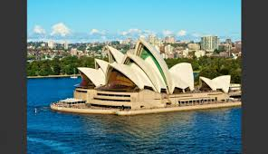
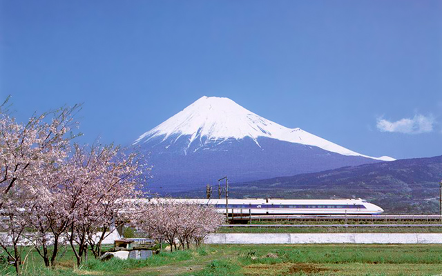

La belleza de Japón
Julio 5 de 2019date_range

Japón (日本) es un país insular del este de Asia. Está ubicado entre
el océano Pacífico y el mar del Japón, al este de China, Rusia y la
península de Corea. Conocido como «La tierra del sol naciente», es
una de las mayores potencias económicas del mundo.
Japón está formado por cuatro islas principales: Honshū, Hokkaidō,
Kyūshū y Shikoku, que forman el 97% de la superficie total del país,
y por otras 6.848 islas menores adyacentes. Tiene una población de
127 millones de personas, la décima más numerosa del mundo. El área
metropolitana de Tokio,
que incluye a la ciudad capital de Tokio y las prefecturas de sus
alrededores, es el área urbana más grande del mundo en términos de
población, albergando a más de 30 millones de habitantes. Es el
segundo país más poblado de Asia Oriental, después de China.
www.conocejapon.com
Hojas de otoño (Momiji) en Kongōbu-ji, Monte Koya. Declarado Patrimonio
de la Humanidad.
Es un país lluvioso y con una alta humedad, posee un clima templado con
4 estaciones diferentes bien definidas, gracias a la distancia a la que
se encuentra respecto del ecuador. De todas formas el clima del norte
es ligeramente frío templado (Hokkaidō) con fuertes veranos y grandes
nevadas en invierno, el centro del país es caliente, veranos húmedos
e inviernos cortos y en el sur ligeramente subtropical (Kyūshū) con
veranos largos, calientes y húmedos e inviernos cortos y suaves.
El clima a veces es afectado por los vientos estacionales
producidos por los centros ciclónicos y anticiclónicos que se
forman en el continente y en el Pacífico (anticiclón o ciclón
hawaiano), generando vientos desde el continente hacia el
Pacífico en invierno y del Pacífico al continente en verano.

Jaime Gaitán
Ing. Mecatrónico/ Desarrollador Web
Ingeniero de la Universaidad Nacional, entuciasta y fanático de la programación, Nacido en la Ciudad de Bogotá, Colombia el 16 de Enero de 1985, ha desarrollado numeros proyectos relacionados con microcontroladores, diseño de productos y máquinaria para la construcción